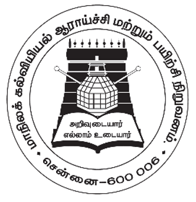
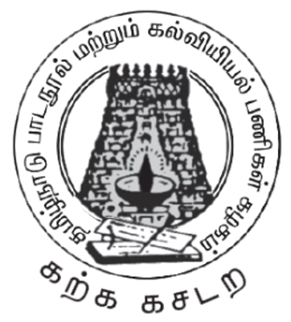

தமிழ்நாடு அரசு
தமிழ்
தமிழ்நாடு அரசு விலையில்லாப் பாடநூல் வழங்கும் திட்டத்தின் கீழ் வெளியிடப்பட்டது
பள்ளிக் கல்வித்துறை
தீண்டாமை மனிதநேயமற்ற செயலும் பெருங்குற்றமும் ஆகும்
தமிழ்நாடு அரசு
முதல்பதிப்பு 2018
திருத்திய பதிப்பு 2019, 2020, 2022
(புதிய பாடத்திட்டத்தின் கீழ் வெளியிடப்பட்ட முப்பருவ நூல்)
விற்பனைக்கு
பாடநூல் உருவாக்கமும் தொகுப்பும்

மாநிலக் கல்வியியல் ஆராய்ச்சி மற்றும் பயிற்சி நிறுவனம் SCERT 2018
நூல் அச்சாக்கம்

தமிழ்நாடு பாடநூல் மற்றும் கல்வியியல் பணிகள் கழகம்.